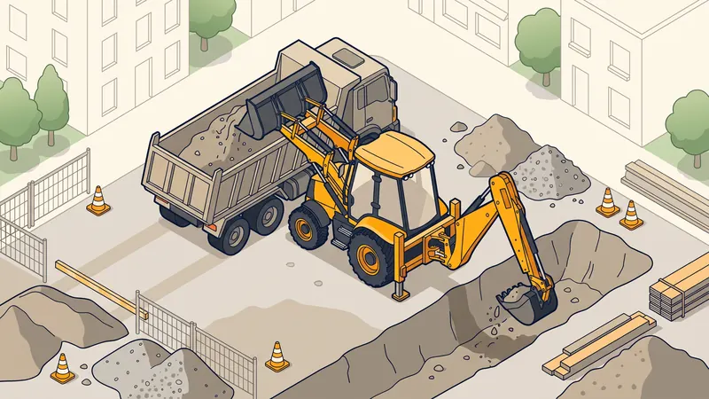

Prix Location Tractopelle en 2026 : Avec ou Sans Chauffeur
Vous avez un projet de terrassement, de chargement ou de tranchées et vous vous demandez combien coûte la location d'un tractopelle ? Le prix de location d'un tractopelle dépend de nombreux paramètres : durée, formule avec ou sans chauffeur, transport, carburant et caution. Dans ce guide complet, nous détaillons tous les tarifs pratiqués en 2026 à Aix-en-Provence et en PACA, ainsi que nos conseils d'expert pour faire le bon choix et maîtriser votre budget.

Qu'est-ce qu'un tractopelle ?
Le tractopelle (aussi appelé chargeuse-pelleteuse ou tracto-pelle) est un engin de chantier polyvalent qui combine deux outils sur un même châssis sur pneus : une chargeuse (godet) à l'avant et une pelle rétro à l'arrière. Cette double fonction en fait l'un des engins les plus rentables pour les chantiers de taille moyenne, là où la polyvalence prime.
Ses principaux usages sont :
- Terrassement : creusement de fouilles, décaissement, mise à niveau de plateformes
- Chargement : reprise de matériaux (terre, gravats, granulats) et chargement de camions à l'avant
- Tranchées : creusement de tranchées pour réseaux (eau, électricité, assainissement) avec la pelle arrière
- Nivellement : régalage et lissage des surfaces avec le godet chargeur
- Manutention : déplacement de matériaux sur le chantier grâce à sa mobilité sur pneus
Contrairement à une pelle sur chenilles, le tractopelle se déplace rapidement sur route sur courtes distances, ce qui le rend très pratique pour les chantiers où il faut alterner creusement et chargement.

Prix de location d'un tractopelle en 2026
Le premier choix à faire est celui de la formule : location nue (sans chauffeur) ou location avec chauffeur. Voici les fourchettes de prix constatées en 2026 en région PACA.
| Formule de location | Tarif heure | Tarif journée | Tarif semaine / mois |
|---|---|---|---|
| Location nue (sans chauffeur) | — | 250 - 450 € | 900 - 1 500 € / 2 500 - 4 500 € |
| Location avec chauffeur | 60 - 90 €/h | 500 - 800 € | 2 200 - 3 600 € / sur devis |
| Tractopelle équipé BRH (avec chauffeur) | 80 - 110 €/h | 650 - 950 € | sur devis |
Les tarifs en location nue n'incluent ni le chauffeur, ni le carburant, ni le transport. La location avec chauffeur englobe l'opérateur qualifié, son assurance et généralement le carburant : c'est une prestation « tout compris » beaucoup plus simple à gérer pour le client.
Les coûts annexes à ne pas oublier
Le tarif affiché de location n'est jamais le coût final. Plusieurs postes annexes viennent s'ajouter, surtout en location nue. Voici le détail à intégrer dans votre budget :
| Poste de coût | Montant indicatif | Remarques |
|---|---|---|
| Transport / livraison (aller-retour) | 150 - 400 € | Par porte-engin, selon distance au dépôt |
| Carburant (GNR) | 50 - 120 €/jour | 8 à 15 L/h, à votre charge en location nue |
| Assurance / franchise | 1 000 - 3 000 € | Franchise restant à charge en cas de sinistre |
| Caution (dépôt de garantie) | 1 500 - 5 000 € | Restituée si l'engin est rendu intact |
| Nettoyage / remise en état | 50 - 150 € | Facturé si l'engin est rendu sale |
| Équipements optionnels (BRH, godets) | 80 - 200 €/jour | Brise-roche hydraulique, godets spéciaux |
Une fois ces coûts additionnés, une location nue « à 300 € » peut facilement atteindre 600 à 800 € la journée tout compris. C'est précisément pour cette raison que la formule avec chauffeur, ou la prestation clé en main, se révèle souvent plus avantageuse.
Location avec ou sans chauffeur : que choisir ?
La conduite exige le CACES R482
Pour conduire un tractopelle dans un cadre professionnel, la réglementation impose le CACES R482 catégorie B1 (engins d'extraction à déplacement séquentiel, pour la pelle) et catégorie C1 (engins de chargement à déplacement alternatif, pour la chargeuse). S'y ajoute une autorisation de conduite délivrée par l'employeur. Sans ces qualifications, aucun loueur sérieux ne vous confiera l'engin en location nue.
La question de la responsabilité
En location nue, vous êtes responsable de l'engin pendant toute la durée du contrat : casse, vol, dégâts matériels ou corporels relèvent de votre assurance, avec une franchise souvent élevée. En location avec chauffeur, l'opérateur et la machine sont couverts par l'assurance du loueur, ce qui réduit considérablement votre exposition au risque.
Quand chaque formule est pertinente
- Location nue : pertinente si vous disposez en interne d'un conducteur titulaire du CACES, pour des chantiers longs où l'engin est mobilisé en continu.
- Location avec chauffeur : idéale pour un usage ponctuel, des travaux techniques (tranchées précises, sol rocheux) ou lorsque vous n'avez pas de personnel qualifié. Vous bénéficiez du savoir-faire d'un opérateur expérimenté.
Besoin d'un Tractopelle avec Chauffeur ?
Chez STP Terrassement, nous mettons à disposition nos engins et nos opérateurs qualifiés à Aix-en-Provence et dans toute la région PACA. Devis détaillé, transparent et sans engagement.
Demandez votre devis gratuitTractopelle, mini-pelle ou prestation clé en main ?
Le tractopelle n'est pas toujours la solution la plus économique. Selon votre chantier, deux alternatives méritent réflexion.
Tractopelle vs mini-pelle
La location de mini-pelle est souvent plus adaptée aux accès étroits, aux petits volumes et aux jardins clos. Le tractopelle, lui, brille sur les terrains dégagés où il faut à la fois creuser et charger des camions. Pour creuser uniquement dans un espace restreint, la mini-pelle est plus économique et plus maniable ; pour des chantiers polyvalents et productifs, le tractopelle l'emporte.
La prestation clé en main
Pour un particulier ou une petite entreprise sans personnel qualifié, confier l'ensemble du chantier à une entreprise de terrassement revient souvent moins cher qu'une location nue, une fois additionnés carburant, transport, assurance et temps de travail. Vous bénéficiez en plus de la garantie décennale et de l'expertise d'un professionnel. Consultez notre service de location de matériel pour comparer les options.
Exemple de chantier réel à Aix-en-Provence
Tranchées et plateforme à Venelles
Projet : Création de 90 mètres linéaires de tranchées pour réseaux secs et humides, plus la mise à niveau d'une plateforme de 250 m² pour une extension de maison.
Localisation : Venelles, au nord d'Aix-en-Provence.
Formule : Tractopelle 8 tonnes avec chauffeur.
Durée : 4 jours ouvrés.
Défis rencontrés : Présence de bancs calcaires durs à partir de 60 cm de profondeur sur la zone des tranchées, et accès limité par un portail de 2,80 m de large.
Solution STP : Nous avons mobilisé un tractopelle équipé d'un brise-roche hydraulique (BRH) en option pour franchir les passages rocheux, conduit par un opérateur titulaire du CACES R482 B1/C1. La chargeuse avant a servi à charger les déblais directement dans la benne, sans engin supplémentaire.
Résultat : Tranchées calibrées au gabarit réglementaire, plateforme livrée au niveau fini (±2 cm), facture finale de 3 180 € TTC alignée sur le devis. Le client a économisé la location d'une seconde machine grâce à la polyvalence du tractopelle.
Conseils d'expert avant de louer
- Vérifiez l'état de l'engin à la prise en charge : pneus, flexibles hydrauliques, niveaux, vitres et état du godet. Photographiez tout défaut pour éviter une facturation abusive au retour.
- Contrôlez les heures incluses dans le contrat. Beaucoup de locations sont plafonnées à 8 h/jour ou 40 h/semaine, avec des heures supplémentaires facturées.
- Renseignez-vous sur le carburant (GNR) : engin rendu plein ou non, mode de refacturation. Le Gazole Non Routier (GNR) est obligatoire pour les engins de chantier.
- Demandez l'attestation d'assurance et le montant exact de la franchise.
- Anticipez le transport : si le dépôt est éloigné, le porte-engin peut représenter le poste le plus cher.
Spécificités de la location en PACA
La région Provence-Alpes-Côte d'Azur impose des contraintes particulières qui influencent le choix et le coût de la location :
- Terrains rocheux et calcaires : très fréquents autour d'Aix-en-Provence. Prévoyez l'option brise-roche hydraulique (BRH), qui majore le tarif horaire mais évite de bloquer le chantier.
- Accès difficiles : ruelles étroites, terrains en pente et portails exigus de l'arrière-pays provençal nécessitent de vérifier le gabarit de l'engin avant de réserver.
- Saisonnalité : la forte demande au printemps et en été tend les tarifs et les disponibilités ; réservez à l'avance.
- Climat sec : les sols argileux durcissent, ce qui peut accroître la durée d'utilisation et donc le coût.
Les erreurs courantes à éviter
- Oublier les coûts annexes dans le budget. Transport, carburant, franchise et caution peuvent doubler le tarif de base affiché. Calculez toujours le coût « tout compris ».
- Louer en nu sans conducteur qualifié. Sans CACES R482 B1/C1, la location nue est illégale en usage professionnel et l'assurance ne couvrira pas un sinistre.
- Sous-dimensionner l'engin. Un tractopelle trop petit pour le volume à terrasser allonge la durée et fait grimper la facture. À l'inverse, surdimensionner coûte cher au transport.
- Négliger l'option BRH en sol rocheux. En PACA, attaquer du calcaire dur sans brise-roche use la machine et fait perdre des journées entières.
- Ne pas lire les conditions de carburant et d'heures incluses. Les heures supplémentaires et le plein non restitué sont des surcoûts fréquents.
- Comparer uniquement le prix journalier. Une prestation avec chauffeur plus chère à l'heure peut être plus rentable au final grâce à la productivité de l'opérateur.
FAQ : Vos questions sur la location de tractopelle
Quel est le prix de location d'un tractopelle à la journée en 2026 ?
En location nue (sans chauffeur), comptez entre 250 et 450 € HT la journée pour un tractopelle standard. Avec chauffeur, le tarif passe à 500 à 800 € la journée selon la puissance de l'engin et la durée du chantier.
Quelle est la différence entre une location avec et sans chauffeur ?
En location nue, vous fournissez le conducteur (titulaire du CACES R482 catégorie B1/C1) et assumez la responsabilité de l'engin. En location avec chauffeur, l'entreprise fournit un opérateur qualifié, assuré et expérimenté : c'est plus cher à l'heure mais plus sûr et souvent plus rentable au final.
Faut-il un permis ou une formation pour conduire un tractopelle ?
Oui. Pour conduire un tractopelle dans un cadre professionnel, le CACES R482 catégorie B1 (pelle) et C1 (chargeuse) est requis, ainsi qu'une autorisation de conduite délivrée par l'employeur. Sans ces qualifications, le loueur refusera la location nue.
Le carburant est-il compris dans le prix de location ?
Non, sauf en location avec chauffeur. En location nue, le carburant (GNR) reste à votre charge : un tractopelle consomme 8 à 15 litres de GNR par heure, soit 50 à 120 € de carburant par jour selon l'intensité d'utilisation.
Combien coûte le transport du tractopelle jusqu'au chantier ?
Le transport aller-retour par porte-engin coûte généralement entre 150 et 400 € selon la distance et la taille de la machine. Certains loueurs proposent la livraison gratuite dans un rayon de 20 à 30 km autour de leur dépôt.
Quelle caution faut-il prévoir pour louer un tractopelle ?
La caution demandée varie de 1 500 à 5 000 € selon la valeur de l'engin. Une franchise d'assurance (souvent 1 000 à 3 000 €) reste à votre charge en cas de dommage. Vérifiez toujours les conditions du contrat de location.
Tractopelle ou mini-pelle : que choisir pour mon chantier ?
Le tractopelle combine chargeuse et pelle, idéal pour les chantiers polyvalents (terrassement + chargement). La mini-pelle est plus maniable et adaptée aux accès étroits et petits volumes. Pour creuser uniquement dans un espace restreint, la mini-pelle est plus économique ; pour terrasser et charger sur terrain dégagé, le tractopelle est plus productif.
Est-il plus rentable de louer un tractopelle ou de confier le chantier à une entreprise ?
Pour un particulier ou une petite intervention ponctuelle, une prestation clé en main avec chauffeur revient souvent moins cher qu'une location nue une fois additionnés le carburant, le transport, l'assurance et le temps perdu. L'entreprise apporte aussi son savoir-faire et sa garantie décennale.
Pour aller plus loin
Pourquoi faire appel à un pro comme STP Terrassement
Confier votre projet à STP Terrassement, c'est s'appuyer sur une entreprise locale implantée à Simiane-Collongue (13109) et intervenant chaque jour à Aix-en-Provence et dans toute la région PACA. Nos équipes disposent d'un parc d'engins récents (mini-pelles 1,5 t, tractopelles, pelles 20 t, camions 8x4, brise-roches hydrauliques), d'opérateurs titulaires du CACES R482, d'une garantie décennale en cours de validité et de 15 ans d'expérience sur le terrain. Nous établissons un devis détaillé gratuit et sans engagement, nous respectons les plannings annoncés et nous tenons le budget validé. Plutôt que de gérer seul la location, le carburant, le transport et l'assurance, profitez d'un interlocuteur unique, transparent et aligné sur vos intérêts. Demandez votre devis gratuit en ligne ou appelez-nous au 07 45 14 20 49 pour échanger directement avec un chargé d'affaires. Vous pouvez aussi nous joindre via notre page contact.